Concetti fondamentali e prime operazioni
Moreno La Quatra Università degli Studi di Enna "Kore"
Un foglio di calcolo è un programma che organizza i dati in una griglia di righe e colonne, permettendo di:
NB: "Foglio di calcolo" non è sinonimo di "Excel"! Excel è solo uno dei tanti software di foglio di calcolo.
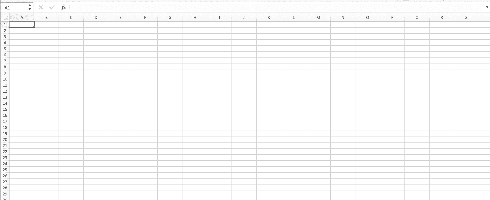
.xlsx
.ods
I concetti che vedremo sono universali e si applicano a tutti i software di foglio di calcolo.
La sintassi delle formule è (quasi) identica.
Automazione dei calcoli: scrivi una formula una volta, si aggiorna automaticamente
Organizzazione dei dati: struttura chiara in righe e colonne
Analisi rapida: funzioni statistiche, filtri, ordinamenti
Visualizzazione: grafici e tabelle professionali
Riduzione degli errori: calcoli automatici eliminano errori manuali
Esempio: La media dei voti non è calcolata e scritta, 8.55, ma calcolata automaticamente =MEDIA(A1:A10).
8.55
=MEDIA(A1:A10)
Budget personale: tracciare entrate e uscite mensili
Voti scolastici o universitari: calcolare medie ponderate
Inventario: gestire liste di prodotti e quantità
Analisi dati: elaborare risultati di sondaggi o esperimenti
Pianificazione: creare calendari e cronogrammi
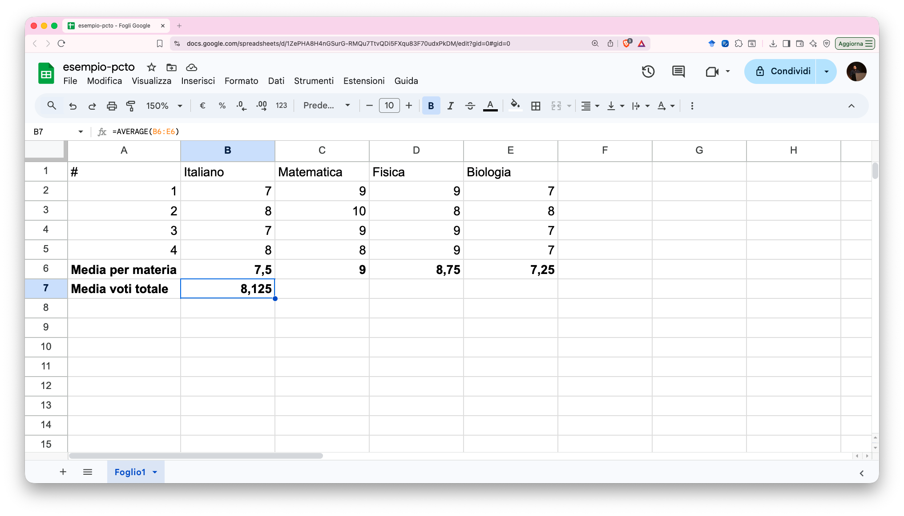
L'interfaccia si compone di:
NB: L'aspetto può variare leggermente tra i software, ma i concetti sono gli stessi.
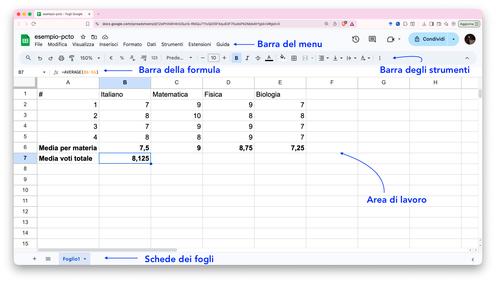
Una cella è l'unità fondamentale del foglio di calcolo.
È l'intersezione tra una colonna (identificata da lettere: A, B, C...) e una riga (identificata da numeri: 1, 2, 3...).
Ogni cella ha un indirizzo unico formato dalla combinazione di lettera e numero.
A1
B5
D12
AA1
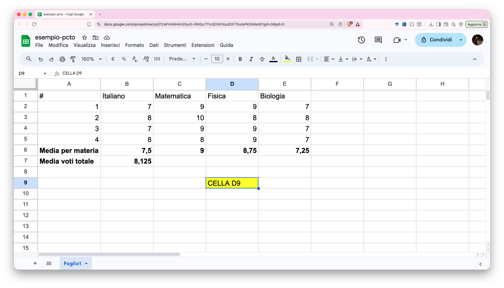
A B C D +------+------+------+------+ 1 | A1 | B1 | C1 | D1 | +------+------+------+------+ 2 | A2 | B2 | C2 | D2 | +------+------+------+------+ 3 | A3 | B3 | C3 | D3 | +------+------+------+------+
Ogni cella è identificabile in modo univoco dal suo indirizzo.
Clic singolo: seleziona una cella
Clic e trascina: seleziona un intervallo di celle
Ctrl + Clic: seleziona celle non adiacenti
Shift + Clic: seleziona da cella attiva a cella cliccata
Un intervallo è un gruppo di celle adiacenti, indicato con i due punti :.
:
A1:A10
A1:D1
A1:C5
A B C D +------+------+------+------+ 1 | ████ | ████ | ████ | | +------+------+------+------+ 2 | ████ | ████ | ████ | | +------+------+------+------+ 3 | ████ | ████ | ████ | | +------+------+------+------+ 4 | | | | |
Le celle evidenziate formano l'intervallo A1:C3.
A1:C3
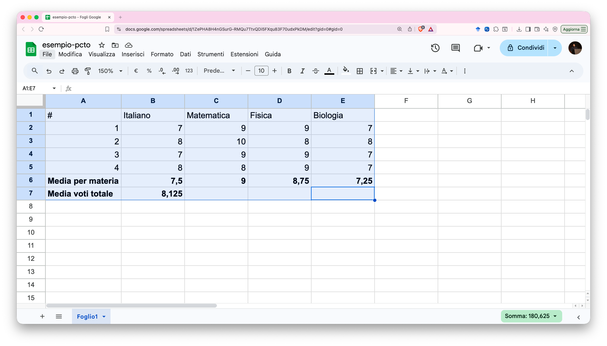
Quale intervallo è selezionato?
A sinistra della barra della formula c'è la casella nome.
Mostra l'indirizzo della cella selezionata.
Info: puoi digitare direttamente un indirizzo (es. G100) e premere Invio per saltare a quella cella!
G100
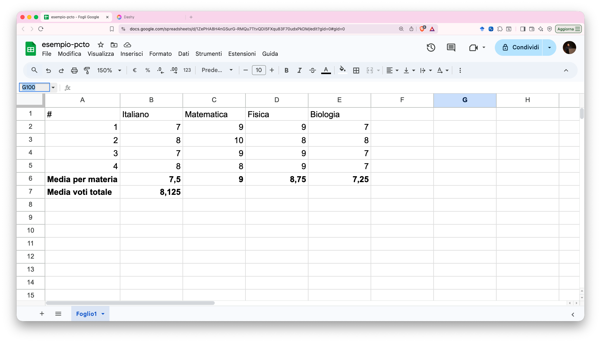
Una cella può contenere:
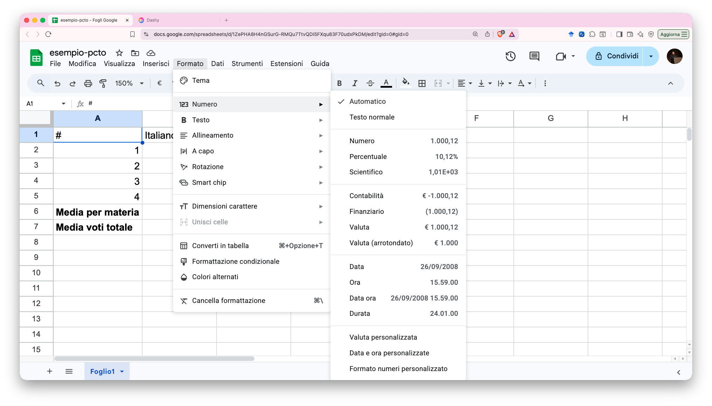
Invio
Tab
Esc
Metodo 1 - Sovrascrittura: Seleziona la cella e inizia a digitare (sostituisce tutto)
Metodo 2 - Modifica:
F2
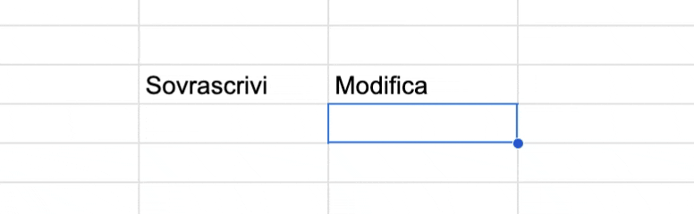
Canc o Backspace: elimina il contenuto, mantiene la formattazione (colore, bordi, ecc.)
Clic destro → Cancella contenuto: elimina solo il contenuto
Clic destro → Cancella tutto: elimina contenuto E formattazione
I numeri sono allineati a destra per default.
Possono includere:
42
-15
0
3.14
2.5
-100
1.5E6
Il testo è allineato a sinistra per default.
Include qualsiasi sequenza di caratteri non riconosciuta come numero, data o formula.
Esempi: Mario Rossi, Codice: ABC123, Nota importante
Mario Rossi
Codice: ABC123
Nota importante
Se vuoi inserire un numero come testo (es. codice 007), inizia con un apostrofo:
007
'007 → verrà visualizzato come 007 (testo)
'007
Senza apostrofo: 007 → diventa 7 (numero)
7
Questo è utile per: codici postali, numeri di telefono, codici prodotto.
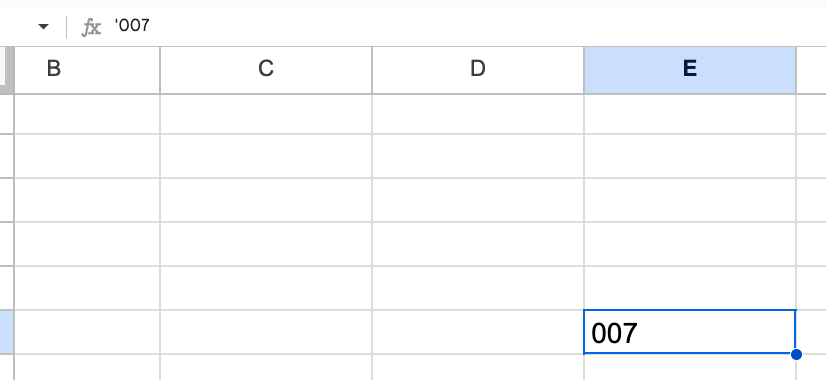
Le date sono memorizzate come numeri internamente, ma visualizzate in formato leggibile.
Formati comuni:
01/12/2027
1-12-2027
14:30
2:30 PM
01/12/2027 14:30
Questo permette di fare calcoli con le date!
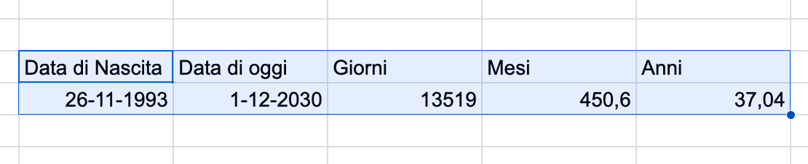
Risultato in B3: 74 (giorni di differenza)
74
NB: = indica che è una formula, ne parleremo più avanti!
=
Le celle possono contenere valori logici:
VERO
TRUE
FALSO
FALSE
Sono il risultato di confronti e condizioni.
Esempio: =A1>10 restituisce VERO se A1 è maggiore di 10.
=A1>10
La formattazione serve a:
PS: Si accede alle opzioni di formattazione tramite il pulsante "Formato" nella barra degli strumenti.
Il formato dei numeri e delle date dipende dalle impostazioni regionali del software. In Italia:
,
.
GG/MM/AAAA
GG-MM-AAAA
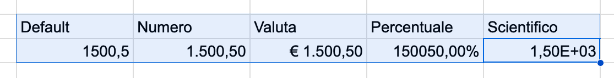
Sono tutti lo stesso valore interno: 1500,5!
1500,5
Nella barra degli strumenti trovi due pulsanti:
Aumenta decimali: 1,2 → 1,20 → 1,200
1,2
1,20
1,200
Diminuisci decimali: 1,234 → 1,23 → 1,2
1,234
1,23
Utile per uniformare la visualizzazione dei numeri.
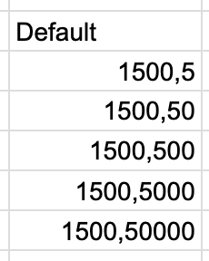
Scegli il formato più adatto al contesto!
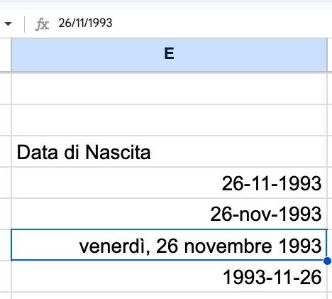
Orizzontale: Sinistra, Centro, Destra, Giustificato
Verticale: Alto, Centro, Basso
Orientamento: Testo ruotato (0°, 45°, 90°, etc.)
Testo a capo: manda a capo automaticamente il testo lungo
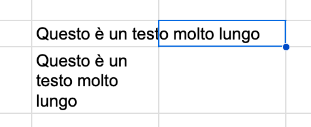
Ctrl+B
Ctrl+I
Ctrl+U
PS: un po' come su Word, ma applicato alle celle!
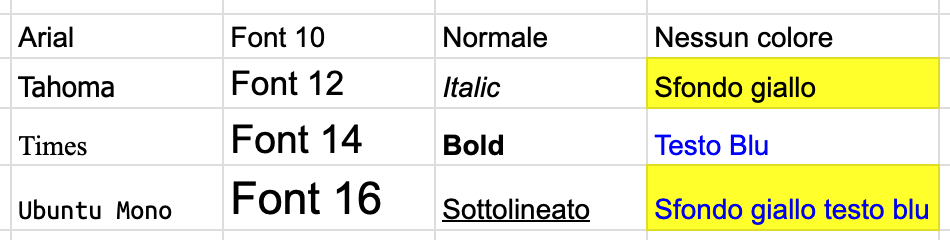
I bordi aiutano a delimitare visivamente i dati.
Opzioni disponibili:
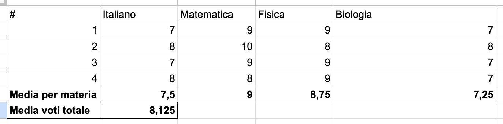
Usa il colore di sfondo per:
Non esagerare! Troppi colori confondono.
Prima (dati grezzi):
Nome Voto Data Mario 28 15/1/2024 Anna 30 20/1/2024
Dopo (formattata):
La barra della formula si trova sopra l'area di lavoro e contiene:
fx
Nella cella vedi il risultato (valore visualizzato)
Nella barra vedi il contenuto reale (formula o dato)
Esempio:
150
=A1+B1
Se selezioni C1, la barra della formula potrebbe mostrare:
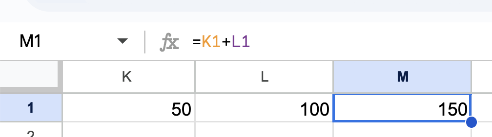
Modificare dalla barra della formula è utile quando:
Clicca nella barra e usa le frecce per navigare nel testo.
Se la formula è molto lunga, puoi espandere la barra:
Ctrl (or cmd) + Shift + U
Questo è utile per formule complesse su più "righe logiche".
Una formula è un'espressione che inizia con il segno = e calcola un risultato.
Può contenere:
=5+3
+
-
*
/
=SOMMA(A1:A10)
Ogni formula DEVE iniziare con il segno =
Corretto: =A1+A2 → calcola la somma
=A1+A2
Errato: A1+A2 → viene interpretato come testo!
A1+A2
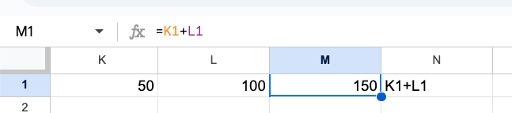
=10-4
=6*7
=20/4
^
=2^3
%
=50%
&
="Ciao "&"Mondo"
Le operazioni seguono l'ordine matematico standard:
()
Da sinistra a destra per operatori di pari livello.
=10+5*2 → Quanto fa?
=10+5*2
5*2 = 10
10+10 = 20
Risultato: 20
20
Se vuoi prima la somma: =(10+5)*2 = 30
=(10+5)*2 = 30
A1+B1
La cella mostra il risultato, la barra mostra la formula.
Invece di scrivere =100+50, scrivi =A1+B1
=100+50
Vantaggi:
=B1+B2+B3
Il risultato in B4 sarà 950. Se modifichi B2, il totale si aggiorna!
950
Invece di digitare gli indirizzi, puoi cliccare sulle celle:
Utile per evitare errori di digitazione!
=A1=10
<>
=A1<>10
>
<
=A1<10
>=
=A1>=10
<=
=A1<=10
Un riferimento è l'indirizzo di una cella usato in una formula.
Esistono due tipi principali:
$A$1
Un riferimento relativo (es. A1) indica una posizione relativa alla cella contenente la formula.
Quando copi la formula, il riferimento si adatta automaticamente alla nuova posizione.
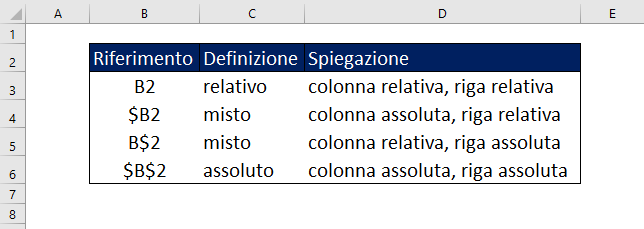
Se copi C1 in C2, la formula diventa =A2+B2 → 40
=A2+B2
Il riferimento si è "spostato" di una riga in basso!
Formula in C1: =A1+B1
Copiata in C2:
Risultato: =A2+B2
Un riferimento assoluto (es. $A$1) indica una posizione fissa nel foglio.
Il simbolo $ "blocca" la parte che precede:
$
=A3*$B$1
=A4*$B$1
Copiando la formula, $B$1 resta sempre $B$1, mentre A3 diventa A4.
$B$1
A3
A4
Metodo 1: Digita manualmente i simboli $
Metodo 2: Seleziona il riferimento nella formula e premi F4
F4
Ogni pressione di F4 cicla tra: A1 → $A$1 → A$1 → $A1 → A1 ...
A$1
$A1
=$A1*2
=$A1*3
=$A2*2
=$A2*3
Copiando verso destra: $A1 resta $A1 (colonna fissa) Copiando verso il basso: $A1 diventa $A2 (riga variabile)
$A2
=A2*B$1
=A2*C$1
=A3*B$1
=A3*C$1
La riga 1 (moltiplicatori) resta fissa grazie a $1.
$1
Relativo (A1): quando vuoi che il riferimento si adatti (caso più comune)
Assoluto ($A$1): quando fai riferimento a un valore fisso (aliquote, costanti, intestazioni)
Misto ($A1 o A$1): quando vuoi bloccare solo una dimensione (tabelle a doppia entrata)
Il "quadratino" di riempimento è il piccolo quadrato nell'angolo in basso a destra della cella selezionata.
Trascinandolo puoi:
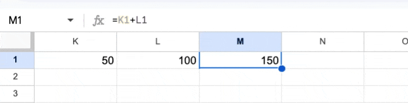
La formula viene copiata e i riferimenti relativi si adattano!
=B2*1.22
Trascinando C2 verso C3 e C4, ottieni automaticamente =B3*1.22 e =B4*1.22.
=B3*1.22
=B4*1.22
=B2-B3
Trascinando B4 verso destra, ottieni =C2-C3 e =D2-D3.
=C2-C3
=D2-D3
Il foglio riconosce pattern e li estende:
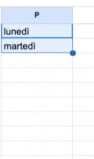
Per serie non standard, seleziona due celle:
Una funzione è una formula predefinita che esegue un calcolo specifico.
Struttura: =NOME_FUNZIONE(argomenti)
=NOME_FUNZIONE(argomenti)
;
=SOMMA(numero1; numero2; ...)
oppure
=SOMMA(intervallo)
Calcola la somma di tutti i valori indicati.
=SOMMA(5; 10; 15)
=SOMMA(A1:A5)
=SOMMA(A1:A5; B1:B5)
=SOMMA(A1; B2; C3)
=MEDIA(numero1; numero2; ...)
=MEDIA(intervallo)
Calcola la media aritmetica dei valori indicati.
=MEDIA(B1:B4)
Risultato: 27,5
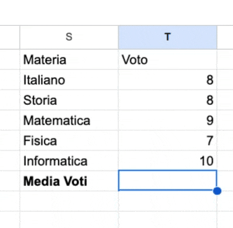
=MAX(intervallo) → restituisce il valore massimo
=MAX(intervallo)
=MIN(intervallo) → restituisce il valore minimo
=MIN(intervallo)
Utili per trovare il valore più alto o più basso in un insieme di dati.
=MAX(A1:A4)
=MIN(A1:A4)
=SE(condizione; valore_se_vero; valore_se_falso)
Restituisce un valore se la condizione è vera, un altro se è falsa.
È la funzione base per creare logica condizionale.
=SE(A2>=18; "Promosso"; "Bocciato")
=SE(A3>=18; "Promosso"; "Bocciato")
Risultati: B2 = "Promosso", B3 = "Bocciato"
NB: Puoi scegliere il nome delle funzioni in "Italiano" nelle impostazioni (MEDIA = AVERAGE, SE = IF, etc.)
=ARROTONDA(numero; num_cifre)
num_cifre > 0
num_cifre = 0
num_cifre < 0
=ARROTONDA(3.14159; 2)
=ARROTONDA(3.14159; 0)
=ARROTONDA(1234; -2)
=ARROTONDA(2.5; 0)
SOMMA
MEDIA
MAX
MIN
SE
ARROTONDA
Crea un foglio con:
=SOMMA(B2:B5)
=MEDIA(B2:B5)
Un esame ha 3 prove con pesi diversi:
Calcola il voto finale: =B2*C2 + B3*C3 + B4*C4
=B2*C2 + B3*C3 + B4*C4
=B2*C2+B3*C3+B4*C4
Risultato: 27.3
Dato un elenco di 10 temperature:
=MEDIA(B1:B10)
=MAX(B1:B10)
=MIN(B1:B10)
=B13-B14
Dato un elenco di voti, determina se ogni studente è Promosso (≥18) o Bocciato (<18).
=SE(A2>=18;"Promosso";"Bocciato")
#VALORE!
#DIV/0!
#RIF!
#NOME?
Soluzione esercizio iPhone
Moreno La Quatra
Università degli Studi di Enna "Kore"
Domande?